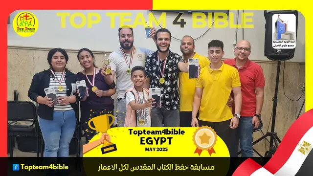
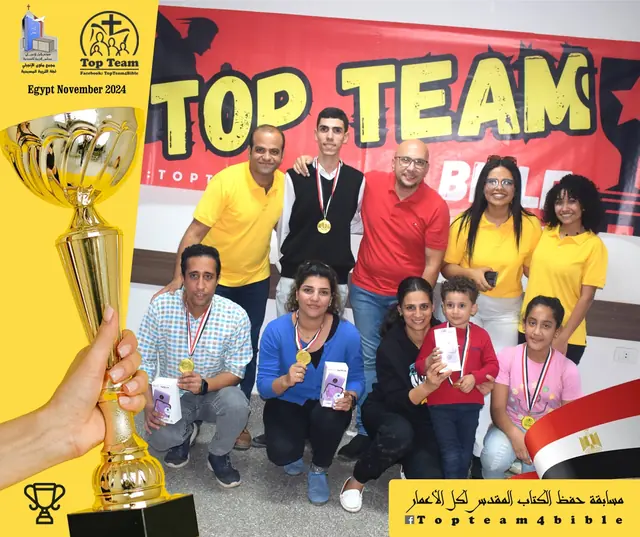
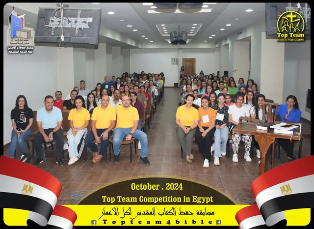

برامج تبني جيلًا يعرف الكلمة ويقود بها
نصمّم برامج روحية وتعليمية للكنائس والمدارس في الشرق الأوسط — من فيديوهات «ستار بوكس» الكرتونية التي تلخّص الكتب المسيحية للشباب، إلى مسابقة «توب تيم» لحفظ الكتاب المقدس، إلى «إدراك» لإعداد قادة جدد للخدمة.
«وَتَعْرِفُونَ الْحَقَّ، وَالْحَقُّ يُحَرِّرُكُمْ»يوحنا ٨: ٣٢
JC — مظلة واحدة لبرامج تخدم الكنيسة في الشرق الأوسط
«يسوع يقدر» — هذا ما نؤمن به ونبني عليه. JC هيئة مسيحية تعمل مع الكنائس والمدارس لتقديم برامج عملية، بلغة الجيل وأدواته، تساعد الشباب على أن يقرأوا ويحفظوا ويعيشوا كلمة الله، وتُعدّ قادة يحملون الخدمة للجيل التالي.
رسالتنا
أن نضع كلمة الله في قلب كل شاب وشابة، من خلال برامج مبتكرة تناسب عالمهم وتخدم الكنيسة المحلية.
رؤيتنا
جيل في الشرق الأوسط يعرف الكتاب المقدس، ويحبه، ويقود كنيسته ومجتمعه بثبات وأمانة.
شراكتنا
لا نعمل بديلًا عن الكنيسة أو المدرسة، بل معهما: نقدّم المحتوى والتدريب والأدوات، ويقود الخدام المحليون.
لحظات من المسابقة
{kind=link}

{kind=link}

{kind=link}

الخدمة تكبر بشركاء كثيرين
هناك مكان لك في هذا العمل، أيًّا كانت موهبتك أو موقعك.
صلِّ معنا
انضم إلى شركاء الصلاة لأجل البرامج والخدام والأجيال التي نخدمها.
تطوّع
مونتاج، رسوم، تعليم، تنظيم مسابقات، ترجمة… مواهبك لها مكان.
كن كنيسة شريكة
استضف برامجنا في كنيستك أو مدرستك وكن جزءًا من الشبكة.
ادعم الخدمة
دعمك يصنع فيديوهات جديدة، ويموّل المسابقات، ويدرّب قادة أكثر.
يسعدنا أن نسمع منك
سواء أردت بدء برنامج، أو التطوع، أو الصلاة معنا — اكتب لنا وسنرد عليك.
- البريد الإلكتروني
- jc.mena.ministry@gmail.com
- نخدم في
- الشرق الأوسط
- تابع برامجنا
- ستار بوكس
- توب تيم